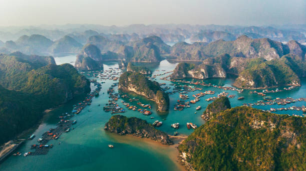

Vietnam 2025 Itinerary
Trip Timeline
Sept 4

Flight: Delhi → HCMC → Da Nang (~11 AM arrival)
Cab: Grab (~₹1500) to villa near My Khe Beach
Afternoon:
Cab: Grab (~₹1500) to villa near My Khe Beach
Afternoon:
- Chill at the villa
- Light lunch nearby (try Bún Chả Cá or Banh Xeo)
- My Khe Beach: walk, sunset, swim
- Han River + Dragon Bridge
- Son Tra Night Market
- Coffee stop: 43 Factory Coffee Roaster
- Optional: River cruise on Han (~₹500–₹800)
- Dinner: Local seafood or Banh Mi
Sept 5

Transport: Private Grab (~₹1500 each way)
Morning:
Morning:
- Leave by 9 AM
- Breakfast in Hoi An (try Rosie’s Cafe)
- Walk Ancient Town: Japanese Bridge, colorful alleys, photo ops
- Get custom-tailored clothes if interested
- An Bang Beach (optional)
- Explore shops, art, local snacks
- Lantern Boat Ride (₹500–₹600 pp)
- Dinner at Mango Mango
- Hoi An Night Market
- Return to Da Nang ~10 PM
Sept 6

Option 1: Curated Tour
- Pickup at 7:30 AM
- Includes: Cable car, Golden Bridge, French Village, buffet lunch
- Cost: ~₹3000–₹3500 pp
- Cab to Ba Na Hills Station
- Buy tickets at gate, skip buffet, more flexible
- Return to Da Nang ~6–7 PM
- Rest at villa
- Optional: Dragon Bridge fire show at 9 PM (weekend bonus)
- Dinner at Fatfish Restaurant or Luna Pub
Sept 7

Flight: Da Nang → Hanoi (early morning recommended)
Cab: Grab from airport to hotel (~₹1000) Afternoon:
Cab: Grab from airport to hotel (~₹1000) Afternoon:
- Visit Hoan Kiem Lake
- Ngoc Son Temple
- Phung Hung Art Street
- Coffee: Cafe Giang (Egg Coffee)
- Ta Hien Beer Street (party, beer towers, street eats)
- Train Street (check train timing)
- Street food crawl: Bun Cha, Banh Cuon, spring rolls
Sept 8

Pickup: 6:30–7:00 AM from hotel
Drive: 3.5 hrs to Ha Long Bay
Cruise Highlights:
Dinner: Light meal or snacks after cruise
Stay: Hotel in Hanoi
Drive: 3.5 hrs to Ha Long Bay
Cruise Highlights:
- Kayaking or bamboo boat ride
- Visit Sung Sot Cave, Titop Island
- Scenic cruising past limestone cliffs
- Buffet lunch on board (veg options available)
- Return to Hanoi by ~8:30 PM
Dinner: Light meal or snacks after cruise
Stay: Hotel in Hanoi
Sept 9

Morning:
- Brunch at Maison de Tet Decor or The Note Coffee
- Walk around Old Quarter (last shopping chance: coffee, local goods)
- Pack & checkout
- Grab to Airport
Want to see packing, budget & squad tips?
See the full essentials guide for cost breakdown, checklist, bonus ideas & more!
See Trip Essentials